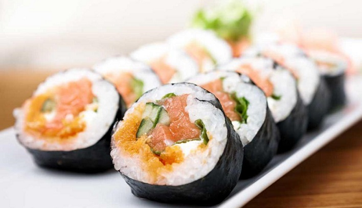

Sushi is the Japanese preparation and serving of specially prepared vinegared rice combined with varied ingredients such as chiefly seafood (often uncooked), vegetables, and occasionally tropical fruits. Styles of sushi and its presentation vary widely, but the key ingredient in all cases is the sushi rice, also referred to as shari , or sumeshi .
Sushi can be prepared with either brown or white rice. It is often prepared with raw seafood, but some common varieties of sushi use cooked ingredients, and many other sorts are vegetarian. Sushi is often served with pickled ginger, wasabi, and soy sauce. Daikon radish is popular as a garnish.
Sushi is often confused with sashimi, a related Japanese dish consisting of thinly sliced raw fish or occasionally meat, and an optional serving of rice.
Sushi is a food preparation originating in Japan, consisting of cooked vinegared rice combined with other ingredients such as raw seafood, vegetables and sometimes tropical fruits.
Ingredients and forms of sushi presentation vary widely, but the ingredient which all sushi have in common is rice or sumeshi.
Sushi can be prepared with either brown or white rice.
It is often prepared with raw seafood, but some common varieties of sushi use cooked ingredients or are vegetarian.
Raw fish (or occasionally other meat) sliced and served without rice is called “sashimi”.
Sushi is often served with pickled ginger, wasabi, and soy sauce.
Popular garnishes are often made using daikon.
The original type of sushi, known today as nare-zushi was first made in Southeast Asia, maybe along what is also known as the Mekong River (reference required).
The term sushi comes from an antiquated grammatical form no longer used in other contexts, and literally means “sour-tasting”, a reflection of its historic origin as a fermented food.
The oldest form of sushi in Japan, narezushi, is still made by wrapping fish in soured fermenting rice, which causes the fish proteins to break down into their constituent amino acids. The fermenting rice and fish have both a sour and an umami taste.
Sushi exists in countless variations and forms, with each region specializing in different fish and styles of cooking. Below are some of the basic types of sushi:
Ofenbach-be-mine
To get some more information about sushi https://en.wikipedia.org/wiki/Sushi
Return to the top of the page